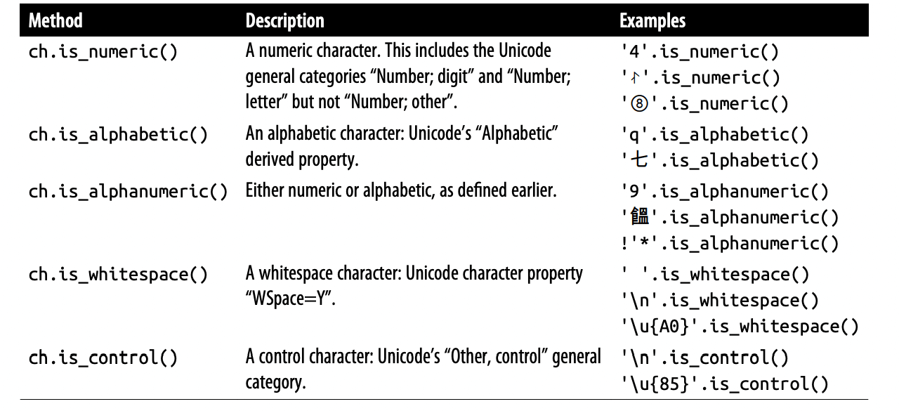
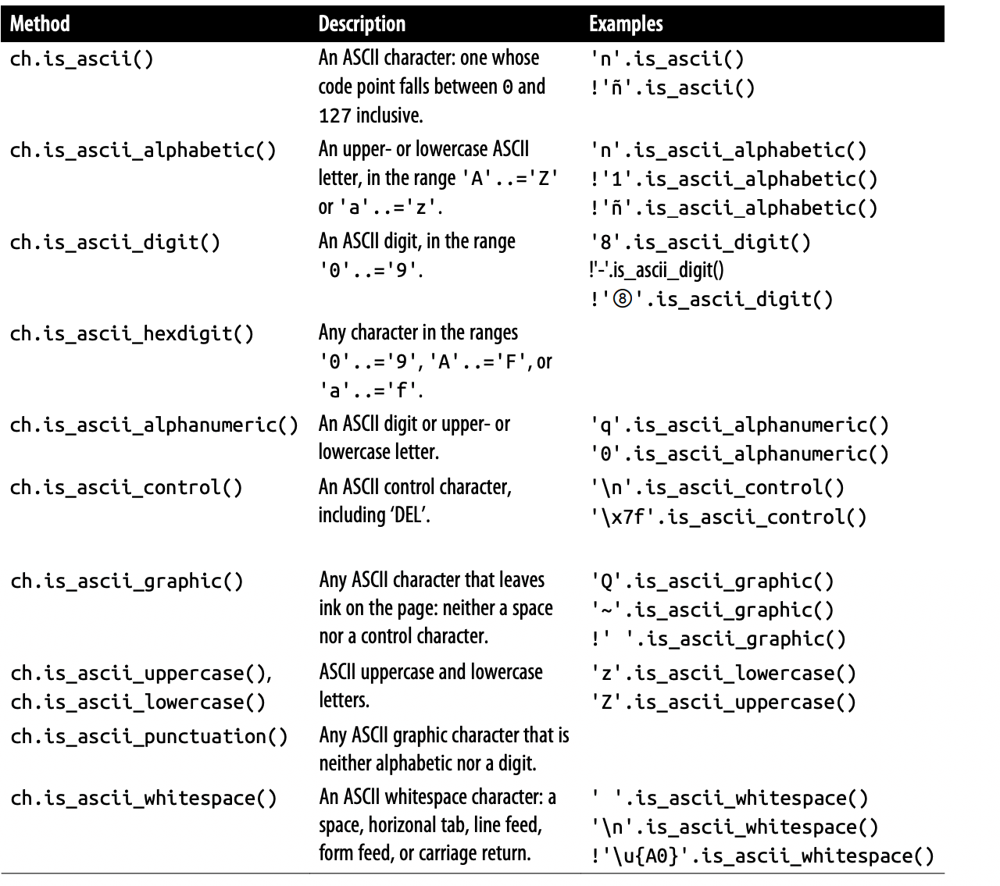
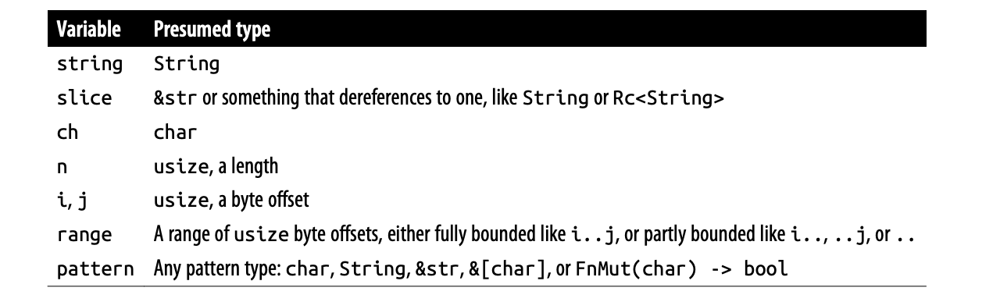
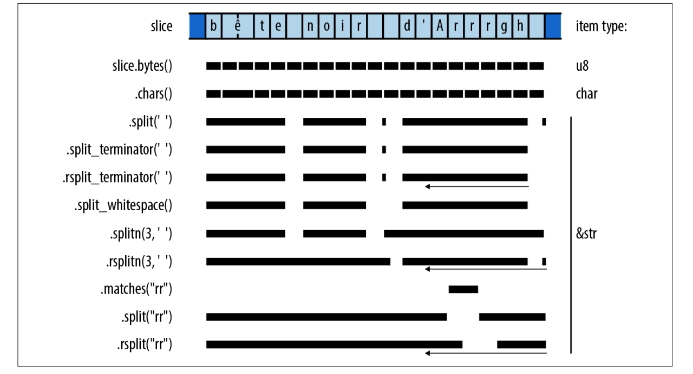
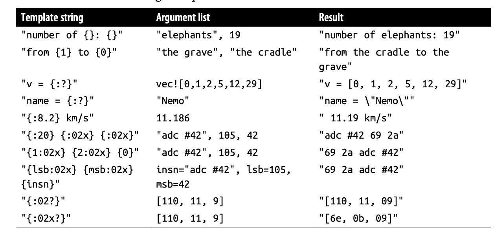
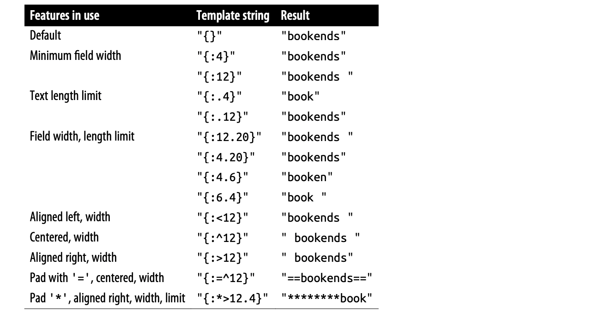
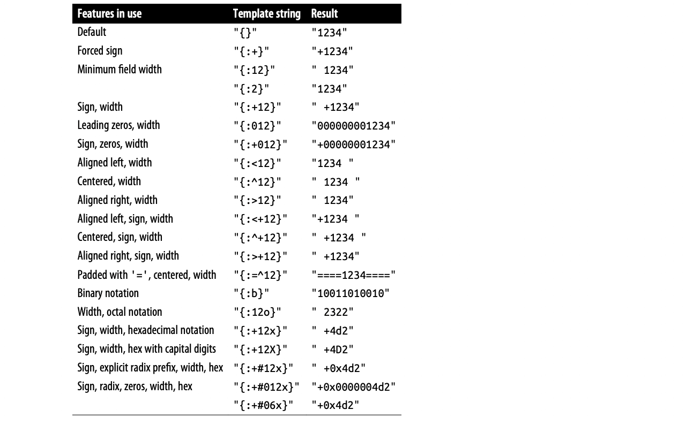
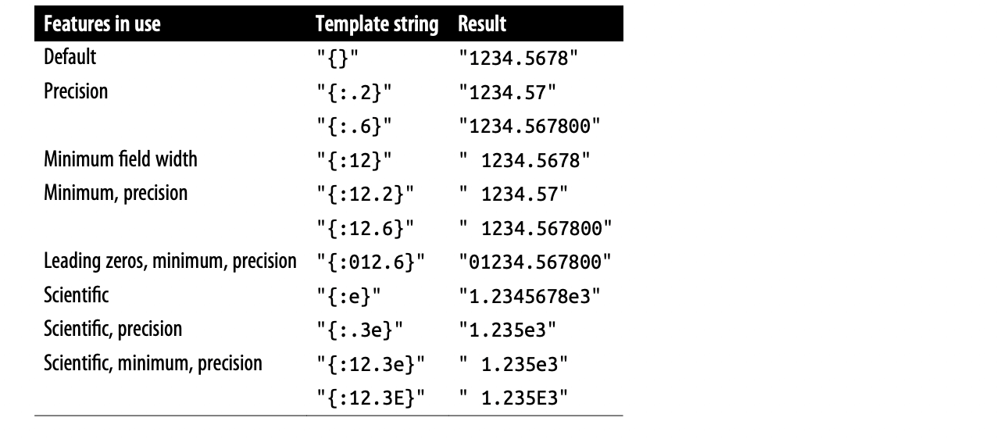
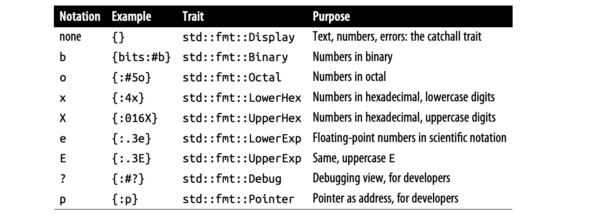

【Rust】字符串和文本
Unicode 和 ASCII 匹配所有 ASCII 字符，从 0 到 0x7f。例如，都将字符 * 分配给码点 42。类似地，Unicode 将 0 到 0xff 分配给与 ISO/IEC 8859-1 字符集相同的字符，用于西欧语言的 8 位 ASCII 超集。Unicode 将此码点范围称为 Latin-1 代码块。
因为 Unicode 是 Latin-1 的超集，所以从 Latin-1 转换到 Unicode 是完全允许的：
1 | fn latin1_to_char(latin1: u8) -> char { |
假设码点在 Latin-1 范围内，反向转换也很简单：
1 | fn char_to_latin1(c: char) -> Option<u8> { |
Rust 中 String 和 str 类型都是使用 UTF-8 编码格式，它是一种变长编码，使用1到4个字节对字符进行编码。有效的 UTF-8 序列有两个限制。首先，对于任何给定码点，只有最短的编码被认为是有效的，也就是不能花费4个字节来编码一个适合3个字节的码点。 此规则确保给定代码点只有一个 UTF-8 编码。其次，有效的 UTF-8 不得编码为 0xd800 到 0xdfff 或超过 0x10ffff 的数字：这些数字要么保留用于非字符目的，要么完全超出 Unicode 的范围。

字符
Rust 中使用一个 32 位值存储 Unicode 码点，char 保证落在 0 到 0xd7ff 或 0xe000 到 0x10ffff 的范围内，所有用于创建和操作 char 值的方法都确保这个规则。char 类型实现了 Copy 和 Clone，以及用于比较、hash 和格式化的所有常用 Trait。
例如，通过 &str 获得字符序列：
1 | assert_eq!("カニ".chars().next(), Some('カ')); |
分类
下表是一些常用的字符类型的分类方法：

下标是一些专门用于 ASCII 字符的方法：

所有的 is_ascii_ 开头的方法在 u8 类型上都是可用：
1 | assert!(32u8.is_ascii_whitespace()); |
在使用这些函数来实现现有规范时要小心，因为分类可能不同。例如 is_whitespace 和 is_ascii_whitespace 在对某些字符的处理上有所不同：
1 | let line_tab = '\u{000b}'; // 'line tab', AKA 'vertical tab' |
因为 is_ascii_whitespace 实现了 web 标准的空白字符，而 is_whitespace 实现了 Unicode 标准的字符。
数字处理
下面是一些用于处理数字的方法：
-
ch.to_digit(radix)：转换成radix进制数字，返回Some(num)，num是u32类型； -
std::char::from_digit(num, radix)：从数字转换成字符，返回Some(ch)； -
ch.is_digit(radix)：判断字符是否是一个ASCII数字，等价于ch.to_digit(radix) != None；
1 | fn main() { |
大小写转换
-
ch.is_lowercase()、ch.is_uppercase()：判断字符是否是一个小写或者大写字母； -
ch.to_lowercase()、ch.to_uppercase()：转换成小写或者大小可迭代字符序列，根据Unicode大小写转换算法；1
2
3let mut upper = 's'.to_uppercase();
assert_eq!(upper.next(), Some('S'));
assert_eq!(upper.next(), None);这些方法返回一个迭代器而不是单个字符，因为
Unicode中不是一对一转换：1
2
3
4
5
6
7
8
9
10
11
12
13
14
15fn main() {
// The uppercase form of the German letter "sharp S" is "SS":
let mut upper = 'ß'.to_uppercase();
assert_eq!(upper.next(), Some('S'));
assert_eq!(upper.next(), Some('S'));
assert_eq!(upper.next(), None);
// Unicode says to lowercase Turkish dotted capital 'İ' to 'i'
// followed by `'\u{307}'`, COMBINING DOT ABOVE, so that a
// subsequent conversion back to uppercase preserves the dot.
let ch = 'İ'; // `'\u{130}'`
let mut lower = ch.to_lowercase();
assert_eq!(lower.next(), Some('i'));
assert_eq!(lower.next(), Some('\u{307}'));
assert_eq!(lower.next(), None);
}为了方便，这些迭代器实现了
std::fmt::Display。
与数字之间的转换
使用 as 操作符可以将字符转换成整数，高位字节可能会被删除：
1 | assert_eq!('B' as u32, 66); |
u8 可以转换成 char，char 也实现了 From<u8>。但是更宽的字符可能代表无效的字符，所以必须使用 std::char::from_u32：
1 | assert_eq!(char::from(66), 'B'); |
String、str
Rust 的 String 和 str 类型保证只保存有效的 UTF-8。通过限制可以创建 String 和 str 值的方式以及可以对它们执行的操作来确保这一点，这样这些值在引入时有效并在使用它们时保持不变。他们所有的方法都保护了这一保证：对它们的任何安全操作都不会引入无效的 UTF-8，这简化了处理文本的代码。
Rust 将文本处理方法放置在 str 或 String 上，具体取决于该方法是否需要可调整大小的缓冲区或内容只是为了使用适当的文本。由于 String 解引用就是 &str，因此在 str 上定义的每个方法也可以直接在 String 上使用。
String 被实现为 Vec<u8> 的包装器，以确保 vector 的内容总是有效的 UTF-8。
下表包含后续的解释中用到的词汇：

创建 String
-
String::new()：返回新的空字符串，没有堆内存申请； -
String::with_capacity(n)：返回新的，预申请n字节的字符串； -
str_slice.to_string()：重新申请一个新的String，它的整个内容都是字符串切片，例如："literal text".to_string()； -
iter.collect()：通过连接迭代器item创建String，例如：1
2
3
4let spacey = "man hat tan";
let spaceless: String =
spacey.chars().filter(|c| !c.is_whitespace()).collect();
assert_eq!(spaceless, "manhattan"); -
slice.to_owned()：Returns a copy of slice as a freshly allocated String. The str type cannot implement Clone: the trait would require clone on a &str to return a str value, but str is unsized. However, &str does implement ToOwned, which lets the implementer specify its owned equivalent.
简单操作
这些方法能获取字符串基本信息：
-
slice.len()：字符串字节长度； -
slice.is_empty()：即slice.len() == 0； -
slice[range]：返回给定部分的切片，有界和无界范围都可以，例如：1
2
3
4
5
6
7
8fn main() {
let full = "bookkeeping";
assert_eq!(&full[..4], "book");
assert_eq!(&full[5..], "eeping");
assert_eq!(&full[2..4], "ok");
assert_eq!(full[..].len(), 11);
assert_eq!(full[5..].contains("boo"), false);
}不能通过括号单个索引字符，必须要先将字符串转换成
Unicode字符序列，然后进行迭代：1
2
3
4fn main() {
let full = "你好啊";
assert_eq!(full.chars().next(), Some('你'))
} -
slice.split_at(i)：返回(slice[..i], slice[i..])这样的tuple； -
slice.is_char_boundary(i)：返回true如果i是一个字符的边界，这样他就可以作为slice的边界；
自然地，可以比较切片的相等性、排序和散列。有序比较只是将字符串视为 Unicode 代码点序列，并按字典顺序比较它们。
追加、插入
-
string.push(ch)：插入单个字符ch到字符串； -
string.push_str(slice)：追加slice的全部内容； -
string.extend(iter)：将迭代器产生的所有item追加到String，迭代器可以产生char，str或者String，这些都被String实现：1
2
3let mut also_spaceless = "con".to_string();
also_spaceless.extend("tri but ion".split_whitespace());
assert_eq!(also_spaceless, "contribution"); -
string.insert(i, ch)：插入一个单个的字符在i字节处，这会涉及字符串的向后移动； -
string.insert_str(i, slice)：在i字节处插入一个slice；
String 实现了 std::fmt::Write，这就意味着 write! 和 writeln! 可以被用来向 String 中追加格式化文本：
1 | fn main() -> Result<(), std::fmt::Error> { |
因为 String 实现了 Add<&str> 和 AddAssign<&str>，所以你可以使用 + 和 +=：
1 | fn main() { |
但是左操作数不能是 &str，所以下面的写法是不可以的：
1 | let parenthetical = "(" + string + ")"; |
而是应该这样写：
1 | let parenthetical = "(".to_string() + &string + ")"; |
但是，不鼓励从末尾向后构建字符串。字符串的行为方式与向量相同，当它需要更多容量时，它的缓冲区大小总是至少翻倍。这使重新复制开销与最终大小成正比。即便如此，使用 String::with_capacity 创建具有正确缓冲区大小的字符串可以完全避免调整大小，并且可以减少重新的内存分配。
删除、替换
String 有一些删除文本的方法，这个不会影响字符串容量，如果需要可以使用 shrink_to_fit：
-
string.clear()：重置String称为空的； -
string.truncate(n)：丢掉n字节后的所有字符如果原来的字符串就少于n，不做任何操作； -
string.pop()：删除字符串中最后一个字符，返回Option<char>； -
string.remove(i)：从String中删除i字节偏移的字符并且返回； -
string.drain(range)：删除指定范围的资费并且返回，后面的字符会前移：1
2
3
4
5fn main() {
let mut choco = "chocolate".to_string();
assert_eq!(choco.drain(3..6).collect::<String>(), "col");
assert_eq!(choco, "choate");
}如果你仅仅是想去删除区间内的字符，可以立即丢掉返回的迭代器：
1
2
3
4
5fn main() {
let mut winston = "Churchill".to_string();
winston.drain(2..6);
assert_eq!(winston, "Chill");
} -
string.replace_range(range, replacement)：用给定的替换字符串切片替换字符串中的给定范围。切片的长度不必与被替换的范围相同，但除非被替换的范围到达字符串的末尾，否则将需要移动范围末尾之后的所有字节：1
2
3
4
5fn main() {
let mut beverage = "a piña colada".to_string();
beverage.replace_range(2..7, "kahlua"); // 'ñ' is two bytes!
assert_eq!(beverage, "a kahlua colada");
}
搜索模式
当标准库函数需要搜索、匹配、拆分或修剪文本时，它接受几种不同的类型来表示要查找的内容：
1 | let haystack = "One fine day, in the middle of the night"; |
这些类型叫做 pattern，大多数操作都支持它们：
1 | assert_eq!( |
标准库支持四种类型的模式：
-
char类型作为字符匹配的模式； -
String，&str或者&&str匹配等于它们表示的一个子串； -
FnMut(char) -> bool使用闭包匹配单个的字符； -
&[char]匹配任何出现在char列表中的字符，如果使用数组字面量，需要使用as_ref进行类型转换：1
2
3
4
5
6
7
8fn main() {
let code = "\t function noodle() { ";
assert_eq!(
code.trim_start_matches([' ', '\t'].as_ref()),
"function noodle() { "
);
// Shorter equivalent: &[' ', '\t'][..]
}
而在库代码中，pattern 是任何实现了 std::str::pattern::Pattern 的类型，该类型目前还是实验性质，所以为避免引起兼容性问题，不要为自己的类型实现。
搜索、替换
Rust 提供了几种方法用于slice模式搜索以及替换：
-
slice.contains(pattern)：如果slice包含指定模式，返回true； -
slice.starts_with(pattern), slice.ends_with(pattern)：slice是否以某个pattern为前缀或者后缀； -
slice.find(pattern), slice.rfind(pattern)：返回Some(i)表示slice包含指定的模式，i是偏移量，find找到最后一个匹配的，而rfind找到最后一个匹配的：1
2
3
4
5
6
7fn main() {
let quip = "We also know there are known unknowns";
assert_eq!(quip.find("know"), Some(8));
assert_eq!(quip.rfind("know"), Some(31));
assert_eq!(quip.find("ya know"), None);
assert_eq!(quip.rfind(char::is_uppercase), Some(0));
} -
slice.replace(pattern, replacement)：替换所有匹配pattern子串：1
2
3
4
5
6
7
8
9
10fn main() {
assert_eq!(
"The only thing we have to fear is fear itself".replace("fear", "spin"),
"The only thing we have to spin is spin itself"
);
assert_eq!(
"`Borrow` and `BorrowMut`".replace(|ch: char| !ch.is_alphanumeric(), ""),
"BorrowandBorrowMut"
);
}.replace()在重叠匹配上的行为可能有点怪，在这里，模式"aba"有四个实例，但在替换第一个和第三个后，第二个和第四个不再匹配：1
assert_eq!("cabababababbage".replace("aba", "***"), "c***b***babbage")
-
slice.replacen(pattern, replacement, n)：和前者相同，但是至多替换n次；
文本迭代
标准库提供了几种迭代文本的方式，例如：

大多数这些方法返回的迭代器是可反转的，也就是实现了 DoubleEndedIterator：
-
slice.chars()：返回包含slice中所有字符的迭代器； -
slice.char_indices()：返回slice中所有字符的字节的偏移量；1
2
3
4
5
6
7
8
9
10
11fn main() {
assert_eq!(
"élan".char_indices().collect::<Vec<_>>(),
vec![
(0, 'é'), // has a two-byte UTF-8 encoding
(2, 'l'),
(3, 'a'),
(4, 'n')
]
);
}这个和
.chars().enumerate()不等价。 -
slice.bytes()：返回切片各个字节的迭代器：1
2
3
4assert_eq!(
"élan".bytes().collect::<Vec<_>>(),
vec![195, 169, b'l', b'a', b'n']
); -
slice.lines()：以\n或者\r\n分割字符，返回一个&str的迭代器； -
slice.split(pattern)：由匹配pattern的子串进行分割，如果模式是&str，返回的迭代器是不可反转的； -
slice.rsplit(pattern)：方法是相同的，只是从右至左扫描； -
slice.split_terminator(pattern), slice.rsplit_terminator(pattern)：模式被视为终止符，而不是分隔符，如果模式在切片的最后匹配，迭代器不会产生一个空切片，例如：1
2
3
4
5
6
7
8
9
10
11
12
13
14
15
16fn main() {
// The ':' characters are separators here. Note the final "".
assert_eq!(
"jimb:1000:Jim Blandy:".split(':').collect::<Vec<_>>(),
vec!["jimb", "1000", "Jim Blandy", ""]
);
// The '\n' characters are terminators here.
assert_eq!(
"127.0.0.1 localhost\n\
127.0.0.1 www.reddit.com\n"
.split_terminator('\n')
.collect::<Vec<_>>(),
vec!["127.0.0.1 localhost", "127.0.0.1 www.reddit.com"]
);
// Note, no final ""!
} -
slice.splitn(n, pattern), slice.rsplitn(n, pattern)：限定最左分割成n个slice； -
slice.split_whitespace(), slice.split_ascii_whitespace()：通过Unicode定义的空格和ASCII空格来分割字符串：1
2
3
4
5
6
7
8
9
10fn main() {
let poem = "This is just to say\n\
I have eaten\n\
the plums\n\
again\n";
assert_eq!(
poem.split_whitespace().collect::<Vec<_>>(),
vec!["This", "is", "just", "to", "say", "I", "have", "eaten", "the", "plums", "again"]
);
} -
slice.matches(pattern)：返回切片中匹配pattern的迭代器，slice.rmatches(pattern)是相同的，但从右往左迭代； -
slice.match_indices(pattern), slice.rmatch_indices(pattern)：返回(offset, match)对，offset是匹配到的match开始字节偏移量；
Trim
修剪字符串是从字符串的开头或结尾删除文本，通常是空格。
-
slice.trim()：返回删除了前后空格的子串，slice.trim_start()和slice.trim_end()仅删除前或后空格：1
2
3
4
5fn main() {
assert_eq!("\t*.rs ".trim(), "*.rs");
assert_eq!("\t*.rs ".trim_start(), "*.rs ");
assert_eq!("\t*.rs ".trim_end(), "\t*.rs");
} -
slice.trim_matches(pattern)：删除slice前后匹配pattern的子串，trim_start_matches和trim_end_matches仅作用于前面或者后面：1
assert_eq!("001990".trim_start_matches('0'), "1990");
转换成其他类型
如果一个类型实现了 std::str::FromStr，那么它就提供了一个标准的方式可以从字符串生成它的值：
1 | pub trait FromStr: Sized { |
所有常用的机器类型都实现了 FromStr：
1 | fn main() { |
char 也实现了 FromStr，但是只针对哪些只包含一个字符的：
1 | assert_eq!(char::from_str("é"), Ok('é')); |
std::net::IpAddr 也实现了 FromStr：
1 | use std::net::{AddrParseError, IpAddr}; |
字符串切片有一个 parse 方法，可以将切片解析为想要的任何类型，只要它实现了 FromStr，但是需要拼出所需的类型：
1 | let address = "fe80::0000:3ea9:f4ff:fe34:7a50".parse::<IpAddr>()?; |
从其他类型转换
这有三种方式转换非文本值到字符串：
-
对于实现了
std::fmt::Display的类型，可以使用format!通过{}格式符来构建字符串：1
2
3
4
5
6
7
8
9
10
11
12
13fn main() -> Result<(), AddrParseError> {
let address = "fe80::0000:3ea9:f4ff:fe34:7a50".parse::<IpAddr>()?;
assert_eq!(format!("{}, wow", "doge"), "doge, wow");
assert_eq!(format!("{}", true), "true");
assert_eq!(
format!("({:.3}, {:.3})", 0.5, f64::sqrt(3.0) / 2.0),
"(0.500, 0.866)"
);
// Using `address` from above.
let formatted_addr: String = format!("{}", address);
assert_eq!(formatted_addr, "fe80::3ea9:f4ff:fe34:7a50");
Ok(())
}所有
Rust的数字类型，字符以及字符串都实现了Display，智能指针Box<T>, Rc<T>, Arc<T>在T实现Display时也会实现Display，Vec和HashMap没有实现Display。 -
如果一个类型实现了
Display，那么他就会自动实现std::str::ToString，可以通过调用.to_string()达到目的：1
assert_eq!(address.to_string(), "fe80::3ea9:f4ff:fe34:7a50");
-
标准库里面的导出类型都实现了
std::fmt::Debug，可以通过{:?}格式声明生成字符串：1
2
3
4
5
6
7
8
9
10fn main() -> Result<(), AddrParseError> {
let address = "fe80::0000:3ea9:f4ff:fe34:7a50".parse::<IpAddr>()?;
// Continued from above.
let addresses = vec![address, IpAddr::from_str("192.168.0.1")?];
assert_eq!(
format!("{:?}", addresses),
"[fe80::3ea9:f4ff:fe34:7a50, 192.168.0.1]"
);
Ok(())
}对于任何实现了
Debug的T，Vec<T>也实现了Debug，所有Rust集合类型都有这样的实现。可以通过派生为自己的类型实现Debug：1
2
struct Complex { re: f64, im: f64 }
借用为其他类型
-
切片和字符串实现
AsRef<str>、AsRef<[u8]>、AsRef<Path>和AsRef<OsStr>。许多标准库函数使用这些Trait作为其参数类型的界限，因此可以直接将切片和字符串传递给它们，即使它们真正想要的是其他类型，详细请查看 AsRef、AsMut； -
slice和字符串也实现了std::borrow::Borrow<str>，HashMap和BTreeMap使用Borrow使String可以很好地作为表中的键工作，详细请查看 Borrow、BorrowMut。
转化为字节序列
-
slice.as_bytes()：将slice转换为&[u8]，由于这不是一个可变引用，所以slice可以假设它的字节将保持有效的UTF-8。 -
string.into_bytes()：获取String的所有权，并且转换为Vec<u8>，这是一种廉价的转换，因为它只是将字符串一直用作其缓冲区的Vec<u8>交出。由于字符串不再存在，因此无法再确保是正确的UTF-8编码，调用者可以随意修改Vec<u8>。
从字节序列生成
这里有一些方法从字节序列转换成 String 或者 slice，取决于你如何处理错误：
-
str::from_utf8(byte_slice)：以&[u8]作为输入，返回Result，如果正确将生成Ok(&str)； -
String::from_utf8(vec)：尝试去构建字符串从Vec<u8>，如果转化成功，返回Ok(String)，并且将Vec中缓冲区的所有权转移至String，以至于没有额外的内存申请。如果转换失败，返回Err(e)，e的类型是FromUtf8Error，可以调用e.into_bytes()获得原vec的所有权：1
2
3
4
5
6
7
8
9
10
11
12
13
14fn main() {
let good_utf8: Vec<u8> = vec![0xe9, 0x8c, 0x86];
assert_eq!(String::from_utf8(good_utf8).ok(), Some("錆".to_string()));
let bad_utf8: Vec<u8> = vec![0x9f, 0xf0, 0xa6, 0x80];
let result = String::from_utf8(bad_utf8);
assert!(result.is_err());
// Since String::from_utf8 failed, it didn't consume the original
// vector, and the error value hands it back to us unharmed.
assert_eq!(
result.unwrap_err().into_bytes(),
vec![0x9f, 0xf0, 0xa6, 0x80]
);
} -
String::from_utf8_lossy(byte_slice)：尝试从&[u8]共享字节片构造字符串或&str。此转换始终成功，将任何无效的UTF-8替换为Unicode替换字符。返回值是一个Cow<str>，如果它包含有效的UTF-8，则直接从byte_slice借用&str，或者拥有一个新分配的字符串，其中替换字符替换了无效的字节。 因此，当byte_slice有效时，不会发生堆分配或复制。 -
String::from_utf8_unchecked：如果知道Vec<u8>包含有效的UTF-8，那么可以调用unsafe函数。这只是将Vec<u8>包装为一个字符串并返回它，根本不检查字节，开发者有责任确保你没有将无效的UTF-8引入系统，这就是为什么这个函数被标记为不安全的原因。 -
str::from_utf8_unchecked：类似地，这需要一个&[u8]并将其作为&str返回，而不检查它是否包含有效的UTF-8。
延迟分配
来看一个示例：
1 | fn get_name() -> String { |
这个函数要求返回一个 String，但是实际上它应该返回一个 String 或一个静态文本，我们没必要为静态文本 &'static str 再次分配内存把它转换成 String 返回。这个时候应该使用 std::borrow::Cow，Cow<'a, T> 是一个有两种变体的枚举：Owned 和 Borrowed。 Borrowed 持有引用 &'a T，Owned 能将持有的 &str 转换为 String，&[i32] 转换为 Vec<i32>，依此类推。无论是 Owned 还是 Borrowed，Cow<'a, T> 总能产生一个 &T 供你使用。事实上，Cow<'a, T> 解引用 &T 很像智能指针。
1 | use std::borrow::Cow; |
由于 Cow 经常用于字符串，标准库对 Cow<'a, str> 有一些特殊的支持。它提供了来自 String 和 &str 的 From 和 Into 转换，因此可以更简洁地编写 get_name：
1 | fn get_name() -> Cow<'static, str> { |
Cow 也实现了 Add<&'a str>，Add<Cow<'a str>>，AddAsign<&'a str>以及AddAssign<Cow<'a, str>> 所以可以使用 + 和 += 运算符：
1 | if let Some(title) = get_title() { |
实现 Default
String 是下了 std::default::Default 和 std::iter::Extend：返回空的字符串，以及追加字符，&[str]，Cow<.., str>或者其他字符串。这与 Rust 的其他集合类型（如 Vec 和 HashMap）实现的特征组合相同，用于通用构造模式（如 collect 和 partition）。
&str 也实现了 Default，返回空切片。
格式化
Rust 的格式化工具被设计为开放式的。 可以通过实现 std::fmt 模块的格式化特征来扩展这些宏以支持自己的类型。可以使用 format_args！ 宏和 std::fmt::Arguments 类型以使自己的函数和宏支持格式化语言。
格式化宏总是借用对其参数的共享引用，他们从不获取所有权或改变它们。
{...} 叫做格式化参数，形式是：{which:how}，which 和 how 都可以省略，{} 是我们常用的格式。
which 用于指定应该使用模板后面的哪个参数，格式化参数中没有 {} 就会简单的从左到右按序取。
how 用来表示参数如何被格式化，填充多少、精度、数字基数等等。 如果 how 存在，则它前面的:是必需的。
下面是一些常用的例子：

文本格式化
对于 String 或者 &str 类型，how 参数的值有几个部分，都是可选的：
-
文本长度限制。如果声明，超过这个长度的文本就会被截断；
-
最小字段宽度。在任何截断之后，如果你的参数比这个短，
Rust会在右边（默认）用空格（默认）填充它，以形成这个宽度的字段。如果省略，Rust不会填充； -
对齐方式。可以通过
< ^ >声明位左对齐，中对齐，右对齐； -
填充字符，如果省略，会自动使用空格；如果声明填充字符，必须声明对齐方式；
文本格式化示例：

Rust 的格式化程序假设每个字符占据一列，而不考虑组合字符、全角半角、零宽度空格或 Unicode 的其他现实。例如：
1 | assert_eq!(format!("{:4}", "th\u{e9}"), "th\u{e9} "); |
尽管 Unicode 说这些字符串都等价于 thé，但 Rust 的格式化程序并不知道像 \u{301} 这样的字符，结合了重音符号需要特殊处理。 它正确地填充了第一个字符串，但假定第二个字符串是四列宽并且不添加任何填充。尽管很容易看出 Rust 在这种特定情况下如何改进，但所有 Unicode 脚本的真正多语言文本格式化是一项艰巨的任务，最好依靠平台的用户界面工具包来处理。有一个流行的包 unicode-width，可以处理这方面的某些方面。
就像 &str 和 String，还可以传递带有文本引用的格式化宏智能指针类型，例如 Rc<String> 或 Cow<'a, str>。
由于文件名路径不一定是有效的 UTF-8，std::path::Path 不是一个文本类型；不能将 std::path::Path 直接传递给格式化宏。但是，Path 的 display 方法返回一个值，可以以适合平台的方式格式化它：
1 | println!("processing file: {}", path.display()); |
数值格式化
Rust 提供了用于格式化数字的方式：
- 类似于文本的填充和对齐方式；
+显示有数值的正负号；#要求显示的前缀0x、0b或者0o；0要求通过在数字中包含前导0来满足最小字段宽度，而不是通常的填充方法；- 最小字段宽度。如果格式化后的数字至少没有这么宽，
Rust在左边（默认）用空格（默认）填充它，以形成一个给定宽度的字段； - 浮点参数的精度，指示
Rust应该在小数点后包含多少位。Rust会根据需要进行四舍五入或零扩展，以准确生成这么多小数位数。如果省略了精度，Rust会尝试使用尽可能少的数字来准确地表示该值，对于整数类型的参数，精度被忽略； - 一个符号。对于整数类型，这可以是
b表示二进制，o表示八进制，或者x或X表示带有小写或大写字母的十六进制。如果包含#字符，则这些字符包括显式的Rust样式基数前缀、0b、0o、0x或0X。对于浮点类型，e或E的基数要求科学记数法，具有归一化系数，使用e或E作为指数。如果你不指定任何符号，Rust会以十进制格式格式化数字；
下面是一些数字格式化的例子，示例 1234_i32：

如最后两个示例所示，最小字段宽度适用于整个数字、符号、基数前缀等。负数总是包括它们的符号。 结果与“强制符号”示例中显示的结果类似。当要求前导零时，对齐和填充字符将被忽略，因为零会扩展数字以填充整个字段。
下面以 1234.5678 为例，演示浮点数格式化：

格式化其他类型
除了数字和字符串之外，你还可以格式化下面几种标注库类型：
-
错误类型都可以直接格式化，便于将它们包含在错误消息中。每个错误类型都应该实现
std::error::Error，它扩展了默认的格式化std::fmt::Display。因此，任何实现Error的类型都可以格式化； -
可以格式化互联网协议地址类型，例如
std::net::IpAddr和std::net::SocketAddr； -
true和false可以格式化，尽管这些通常不是直接呈现给最终用户的最佳字符串；
用于调试的格式化
为了帮助调试和记录，{:?} 参数以对程序员有帮助的方式格式化 Rust 标准库中的任何公共类型。可以使用它来调试 vector、切片、元组、哈希表、线程和数百种其他类型。
例如，你可这样写：
1 | fn main() { |
这将输出：
{"Taipei": (25.0375167, 121.5637), "Portland": (45.5237606, -122.6819273)}
可以使用 {:#?} 以更适合阅读的方式打印：
{
"Taipei": (
25.0375167,
121.5637,
),
"Portland": (
45.5237606,
-122.6819273,
),
}
调试格式通常以十进制打印数字，但可以在问号前放置一个 x 或 X 来请求十六进制。前导0和字段宽度语法也可以接受。例如，可以编写：
1 | fn main() { |
这将输出：
ordinary: [09, 15, 240]
hex: [09, 0f, f0]
可以通过 #[derive(Debug)] 让自己的类型支持 {:?}：
1 |
|
例如：
1 | let third = Complex { re: -0.5, im: f64::sqrt(0.75) }; |
这将输出：
Complex { re: -0.5, im: 0.8660254037844386 }
格式化指针
通常，如果将任何类型的指针传递给格式化宏——引用、Box、Rc——宏只会格式化引用的对象，指针本身并不重要。但是在调试时，有时查看指针会很有帮助：地址可以作为单个值的粗略“名称”，这在检查具有循环或共享的结构时会很有启发性。
{:p} 将引用和智能指针格式化为地址：
1 | fn main() { |
这可能输出：
text: mazurka, mazurka, mazurka
pointers: 0x6000024ac2b0, 0x6000024ac2b0, 0x6000024ac2e0
从结果可以看出 original 和 cloned 具有相同的地址，这也符合 Rc 的定义。
通过索引或者名称引用参数
可以简单的通过索引来指定格式化参数使用哪个值，也就是指定开始所说的 which：
1 | fn main() { |
也可以通过名称选择参数，有点像Python的关键字参数，例如：
1 | fn main() { |
可以将命名参数，位置参数，索引参数混合起来使用，只是命名参数必须出现在最后。位置参数与参数从左到右配对，就好像索引和命名参数不存在一样：
1 | fn main() { |
动态宽度和精度
之前我们看到的宽度和精度都是固定值，也可以在运行时确定：
1 | format!("{:>1$}", content, get_width()) |
1$ 告诉 format! 使用第二个参数作为宽度，宽度的类型必须是 usize，也可以使用命名参数：
1 | format!("{:>width$}", content, width=get_width()) |
相同的方式处理文本长度限制：
1 | format!( |
在文本长度或者浮点参数的位置，你还可以写 *，来使用下一个位置参数作为精度。例如：
1 | fn get_width() -> usize { |
这将输出：
hello worl
hello worl
格式化自定义类型
格式化宏实际上是 std::fmt 中定义的一系列宏，可以通过自己实现这些特征中的一个或多个来使 Rust 的格式化宏格式化自己的类型。

用于格式化的 Trait 都有相同的结构，仅仅是名字不同，以 std::fmt::Display 为例：
1 | trait Display { |
fmt 方法的工作是生成有效的 self 表示并将其字符写入 dest。 除了作为输出流之外，dest 参数还携带从格式参数解析的详细信息，例如对齐方式和最小字段宽度。
下面是一个完整的实现用于 Complex 格式化输出：
1 | use std::fmt; |
如果格式化参数中携带 #，我们以极坐标的形式显示负数，否则我们按照常规的方式展示。虽然 fmt 返回 Result，但是我们通常不用处理错误，只需向上传递，Formatter 还有很多其他有用的方法，alternate 只是其中一个。
format_args!
可以使用 Rust 的 format_args 编写自己的函数和宏来接受类型为 std::fmt::Arguments 的参数。例如，假设程序需要在运行时记录状态消息，并且想使用 Rust 的文本格式化语言来生成它们，例如：
1 |
|
在编译时，format_args! 宏解析模板字符串并根据参数类型检查它，如果有任何问题则报告错误。在运行时，它计算参数值并构建一个 Arguments ，其中包含格式化文本所需的所有信息：模板的预解析形式，以及对参数值的共享引用。
构造一个 Arguments 没有什么消耗：它只是收集一些指针，还没有进行格式化工作。这很重要：如果未启用日志记录，则将数字转换为十进制、填充值等所花费的任何时间都将被浪费。
File 类型实现了 std::io::Write 特征，其 write_fmt 方法接受 Argument 并进行格式化，它将结果写入底层流。
正则表达式
regex 是 Rust 的官方正则表达式库，它提供通常的搜索和匹配功能。它对 Unicode 有很好的支持，但它也可以搜索字节字符串，尽管它不支持在其他正则表达式包中经常发现的某些功能，例如反向引用和环视模式，但这些简化允许正则表达式确保搜索时间与表达式的大小和正在搜索的文本长度呈线性关系。除其他外，这些保证使正则表达式可以安全使用，即使是在搜索不可信文本的不可信表达式中也是如此。
尽管 regex 不在 std 中，但它由 Rust 库团队维护。要使用正则表达式，请将以下行放在Cargo.toml 文件的 [dependencies] 部分中：
1 | regex = "1" |
基本使用
Regex 值表示已解析的正则表达式可供使用。Regex::new 构造函数尝试将 &str 解析为正则表达式，并返回一个结果：
1 | use regex::{Error, Regex}; |
Regex::captures 方法在字符串中搜索第一个匹配项，并返回一个 regex::Captures 值，其中包含表达式中每个组的匹配信息：
1 | // You can retrieve capture groups: |
使用索引可能会发生 panic，可以使用 Captures::get，它返回一个 Option<regex::Match>，Match 包含了的那个的组匹配：
1 | assert_eq!(captures.get(4), None); |
find_iter 为文本中每个连续的非重叠匹配返回一个迭代器，返回相对于文本的开始和结束字节索引。例如：
1 | let haystack = "In the beginning, there was 1.0.0. \ |
captures_iter 产生的 Captures 包含所有匹配组：
1 | for caps in semver.captures_iter(haystack) { |
这将输出：
28 -> 33, 1.0.0
56 -> 66, 1.0.1-beta
98 -> 103, 1.2.4
懒惰构建 Regex
Regex::new 构造函数可能很昂贵：为 1,200 个字符的正则表达式构造 Regex 即使在快速机器上也需要一毫秒，即使是很小的表达式也需要数微秒，因此，最好将 Regex 构造排除在繁重的计算循环之外，而是应该构建一次正则表达式，然后重用同一个。
lazy_static 提供了一种比较好的方式用于延迟初始化静态值，这些值只有在第一次使用时才会被初始化，在 Cargo.toml 添加如下依赖：
1 | [dependencies] |
示例代码：
1 | use regex::{Error, Regex}; |
该宏为一个名为 SEMVER 的静态变量的声明，但它的类型不完全是 Regex。 相反，它是实现 Deref<Target=Regex> 的宏生成类型，因此公开了与 Regex 相同的所有方法。第一次解引用 SEMVER 时会进行初始化，并保存该值以供以后使用。由于 SEMVER 是一个静态变量，而不仅仅是一个局部变量，因此初始化程序在每次程序执行时最多运行一次。
Normalization
大多数用户会认为茶的法语单词 thé 是三个字符长。然而，Unicode 实际上有两种方式来表示这个文本：
-
在
composed形式中，thé包含三个字符t、h和é，其中é是单个Unicode字符，代码点为0xe9。 -
在
decomposed形式中，thé包含四个字符t、h、e和\u{301}，其中e是纯ASCII字符，没有重音符号，代码点0x301是“组合重音符号”字符，它为它后面的任何字符添加一个尖锐的重音。
Unicode 不认为 é 的组合形式或分解形式是“正确的”形式；相反，它认为它们都是相同抽象字符的等效表示。Unicode 表示两种表单都应该以相同的方式显示，并且允许使用文本输入法生成任何一种，因此用户通常不会知道他们正在查看或输入哪种表单。（Rust 允许直接在字符串文字中使用 Unicode 字符，因此如果不在乎获得哪种编码，可以简单地编写 thé。为了清楚起见，我们将使用 \u 转义。）
然而，考虑到 Rust 中 &str 或 String 值，“th\u{e9}”和“the\u{301}”是完全不同的。它们有不同的长度，比较不相等，有不同的哈希值，并且相对于其他字符串有不同的顺序：
1 | use std::collections::hash_map::DefaultHasher; |
显然，如果打算比较用户提供的文本或将其用作哈希表或 Btree 中的键，则需要首先将每个字符串放在某种规范形式中。
幸运的是，Unicode 指定了字符串的规范化形式。每当根据 Unicode 规则将两个字符串视为等效时，它们的规范化形式是逐字符相同的。当使用 UTF-8 编码时，它们是逐字节相同的。这意味着可以将规范化的字符串与 == 进行比较，将它们用作 HashMap 或 HashSet 中的键等。
未能规范化甚至会产生安全后果，例如，如果网站在某些情况下对用户名进行了规范化，但在其他情况下没有规范化用户名，最终可能会得到两个不同的用户，名为 bananasflambé，代码的某些部分将其视为同一个用户，但其他部分将其区别开来，从而导致一个人的权限被错误地扩展到另一个。当然，有很多方法可以避免此类问题，但历史表明也有很多方法可以避免。
Normalization Forms
Unicode 定义了四种规范化形式，每一种都适用于不同的用途。 有两个问题需要回答：
-
首先，更喜欢字符是尽可能组合还是尽可能分开？例如，越南语单词
Phở的composed形式是三个字符串"Ph\u{1edf}"，其中声调符号̉和元音符号̛都应用于单个字符的基本字符"o"，Unicode负责将拉丁小写字母o命名为上面带有角和钩的字符。decomposed形式将基本字母及其两个标记拆分为三个单独的Unicode字符：o、\u{31b}和\u{309}，从而产生Pho\u{31b}\u{309}。组合形式通常兼容性问题较少，因为它与大多数语言在Unicode建立之前用于其文本的表示形式更加匹配。它还可以很好地与Rust的format!工作。另一方面，decomposed形式可能更适合显示文本或搜索，因为它使文本的详细结构更加明确。 -
第二个问题是：如果两个字符序列表示相同的基本文本，但文本格式的方式不同，你想将它们视为等价还是保持不同？
Unicode对普通数字5、上标数字⁵（或\u{2075}）和带圆圈的数字⑤（或\u{2464}）有单独的字符，但声明所有这三个是兼容性等价的。类似地，Unicode有一个用于连字的单个字符\u{fb03}，但声明它与三个字符序列ffi等效。兼容性等价对搜索有意义：仅使用
ASCII字符搜索"difficult"，应该匹配字符串"di\u{fb03}cult"。对后一个字符串应用兼容性分解会将连字替换为三个纯字母“ffi”，从而使搜索更容易。但是将文本规范化为兼容性等效形式可能会丢失基本信息，因此不应粗心地应用它。例如，在大多数情况下将2⁵存储为25是不正确的。
Unicode 规范化形式 NFC 和规范化形式 NFD 使用每个字符的最大组合和最大分解形式，但不尝试统一兼容性等效序列。而NFKC 和 NFKD 规范化形式类似于 NFC 和 NFD，但将所有兼容性等价序列规范化为它们类的一些简单代表。
万维网联盟的建议对所有内容使用 NFC。 Unicode 标识符和模式语法建议在编程语言中使用 NFKC 作为标识符，并提供必要时调整格式的原则。
unicode-normalization
Rust 的 unicode-normalization 提供了一个 trait，它向 &str 添加方法以将文本置于四种规范化形式中的任何一种。要使用它，将以下行添加到 Cargo.toml 文件的 [dependencies] 部分：
1 | unicode-normalization = "0.1.17" |
有了这个声明，&str 有四个新方法，它们返回对特定规范化字符串形式的迭代器：
1 | use unicode_normalization::UnicodeNormalization; |
Taking a normalized string and normalizing it again in the same form is guaranteed to return identical text.
Although any substring of a normalized string is itself normalized, the concatenation of two normalized strings is not necessarily normalized: for example, the second string might start with combining characters that should be placed before combining characters at the end of the first string.
As long as a text uses no unassigned code points when it is normalized, Unicode promises that its normalized form will not change in future versions of the standard. This means that normalized forms are generally safe to use in persistent storage, even as the Unicode standard evolves.